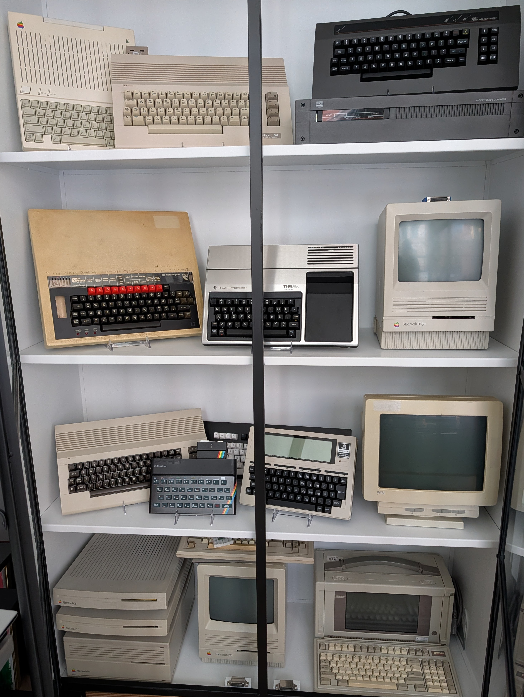

Retro/Vintage Computer Inventory

All machines are working unless otherwise indicated.
Rebuilds
- SixtyClone
250469 PCB purchased from Tindie. Built with as many original components as I could find. I also have a 1541 and a 1702 and I'm running a Commodore4ever Wifi modem.
- Evo64
Contains a VIC-II Kawari.
- Acorn BBC Model B Issue 7
Purchased PCB from Tindie. Built from new components plus recovered ICs from a non-working machine.
Working. Last hurdle was realizing I needed the VC2023 fix.
- ZX Spectrum 48 Issue 3B
Printed PCBs at PCBWay. I have extras. Built from new components (4164 RAM) plus recovered ICs from a non-working machine. Currently using the vLA82 ULA replacement absent a working original ULA (the one in the parts machine is dead).
- Altair 8800
Lots of explanation required for this one.
Original
- 1980
- Commodore Pet 8032
Purchased on eBay from the UK. Replaced power supply. Working.
- 1981
- 1983
- 1984
- 1987
- Amiga 2000
Have two, one with an untested Video Toaster. One with a working 2090 (2091?). Plus an untested 2091.
One has an RGBtoHDMI installed. Also have a 1084 monitor, but it's a bit flaky.
- Compaq Portable III
- 1989
- Mac SE/30
Actually have two, but I clumsily ripped the SCSI chip off one motherboard when trying to replace it.
- 1994
- Uncertain
- Motorola VME chassis with MVME2604 PowerPC card
Working, but not booting - no media yet.
SBCs
Terminals